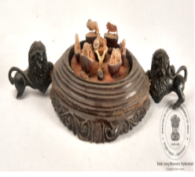

🔇 Is bhasha me is vastu ka audio abhi uplabdh nahi hai.
2. XXII - 534: सजावटी वस्तु

2. XXII - 534
इमली के बीज पर उकेरे गए पशु। इमली के सात आधे बीजों पर उकेरे गए हैं – दो हाथी, एक घोड़ा, एक शेर, एक बाघ, एक ऊँट और एक कुत्ता। एक सजावटी वस्तु जिसमें हाथीदांत से बनी हुई पेड़ की आकृति दर्शाई गई है, जिसे लकड़ी के अंडाकार आधार पर बनाया गया है। इस अंडाकार लकड़ी के आधार पर बेलों की नक्काशीदार किनारी बनी हुई है। आधार पर दो शेर जुड़े हुए हैं। ये शेर काले रंग के हैं और अपनी पूँछ पीठ पर उठाए हुए हैं। यह सजावटी वस्तु हाथीदांत और लकड़ी से बनाई गई है और कलाकार की अद्भुत शिल्पकला को प्रदर्शित करती है। यह सजावटी वस्तु भारत की है और 20वीं शताब्दी की है।
2. XXII - 534: Decorative Piece
2. XXII - 534
Animals carved on tamarind seeds. Seven half tamarind seeds have been carved — two elephants, a horse, a lion, a tiger, a camel and a dog. A decorative piece showing a tree form made of ivory, set upon an oval wooden base. This oval wooden base carries a carved border of creepers. Two lions are attached to the base. These lions are black in colour and hold their tails raised over their backs. This decorative piece is made of ivory and wood and displays the remarkable craftsmanship of the artist. This decorative piece is from India and dates from the 20th century.
2. XXII - 534: అలంకార వస్తువు
2. XXII - 534
ఈ అలంకార వస్తువు 20వ శతాబ్దానికి చెందిన భారతీయ కళాఖండం. దీనిని దంతం మరియు చెక్కతో తయారు చేశారు. దీనిలో, ఏడు చింత గింజల సగం భాగాలపై రెండు ఏనుగులు, ఒక గుర్రం, ఒక సింహం, ఒక పులి, ఒక ఒంటె మరియు ఒక కుక్కను సూచిస్తూ చెక్కారు. చెక్కతో చేసిన అండాకారపు పీఠంపై , దంతంతో చెక్కబడిన ఒక దంతపు చెట్టు ఉంది. ఈ అండాకారపు చెక్క పీఠం చుట్టూ లత అంచులు ఉన్నాయి. పీఠానికి నలుపు రంగులో ఉన్న రెండు సింహాలు జోడించబడి ఉన్నాయి, ఈ సింహాలు తమ తోకలను తమ వీపుపై ఉంచుకుని ఉన్నాయి. ఈ అలంకరణ వస్తువు కళాకారుడి గొప్ప పనితనాన్ని తెలియజేస్తుంది.
2. ایکس ایکسII - 534:سجاوٹی سامان
2. ایکس ایکسII - 534
5. ایم ایس-4556: گلدان
سبز مائل سیاہ رنگ کا گول مٹی کا گلدان، جس کی گردن کے حصے پر کھجور کے پتوں اور پودوں کے نقش ابھار دار انداز میں بنائے گئے ہیں۔ اس منظر میں ایک مگرمچھ کو دکھایا گیا ہے جو ایک افریقی لڑکی کی طرف بڑھ رہا ہے۔وہ افریقی لڑکی اپنے دائیں ہاتھ میں ایک چھوٹا برتن پکڑی ہوئی ہے۔ اس نے زرد اور نارنجی رنگ کا لباس پہن رکھی ہے، گردن میں سنہری ہار اور دائیں ہاتھ میں سنہری چوڑیاں پہنی ہوئی ہیں۔مگرمچھ کے سر کے قریب آٹھ پھل بنے ہوئے ہیں، اور اس کی دم گلدان کی گردن کو چھو رہی ہے۔ مگرمچھ کی تھوتھنی کا نچلا حصہ نارنجی رنگ میں رنگا گیا ہے۔یہ گلدان فرانس سے تعلق رکھتا ہے، مٹی سے تیار کیا گیا ہے، اس گلدان کا تعلق بیسویں صدی سے ہے
سبز مائل سیاہ رنگ کا گول مٹی کا گلدان، جس کی گردن کے حصے پر کھجور کے پتوں اور پودوں کے نقش ابھار دار انداز میں بنائے گئے ہیں۔ اس منظر میں ایک مگرمچھ کو دکھایا گیا ہے جو ایک افریقی لڑکی کی طرف بڑھ رہا ہے۔وہ افریقی لڑکی اپنے دائیں ہاتھ میں ایک چھوٹا برتن پکڑی ہوئی ہے۔ اس نے زرد اور نارنجی رنگ کا لباس پہن رکھی ہے، گردن میں سنہری ہار اور دائیں ہاتھ میں سنہری چوڑیاں پہنی ہوئی ہیں۔مگرمچھ کے سر کے قریب آٹھ پھل بنے ہوئے ہیں، اور اس کی دم گلدان کی گردن کو چھو رہی ہے۔ مگرمچھ کی تھوتھنی کا نچلا حصہ نارنجی رنگ میں رنگا گیا ہے۔یہ گلدان فرانس سے تعلق رکھتا ہے، مٹی سے تیار کیا گیا ہے، اس گلدان کا تعلق بیسویں صدی سے ہے
2. XXII - 534: সজ্জাসামগ্রী
2. XXII - 534
তেঁতুলের বীজের উপর খোদাই করা পশু। তেঁতুলের সাতটি অর্ধেক বীজের উপর খোদাই করা হয়েছে – দুটি হাতি, একটি ঘোড়া, একটি সিংহ, একটি বাঘ, একটি উট এবং একটি কুকুর। একটি সজ্জাসামগ্রী, যাতে হাতির দাঁতে তৈরি গাছের আকৃতি দেখানো হয়েছে, যা কাঠের ডিম্বাকৃতি বেদির উপর নির্মিত। এই ডিম্বাকৃতি কাঠের বেদিতে লতার খোদাই করা পাড় রয়েছে। বেদিতে দুটি সিংহ যুক্ত রয়েছে। এই সিংহ দুটি কালো রঙের এবং নিজেদের লেজ পিঠের উপর তুলে রেখেছে। এই সজ্জাসামগ্রীটি হাতির দাঁত ও কাঠ দিয়ে তৈরি এবং শিল্পীর অপূর্ব কারুকার্য প্রদর্শন করে। এই সজ্জাসামগ্রীটি ভারতের এবং ২০শ শতাব্দীর।
2. XXII-534: સુશોભન કૃતિ
2. XXII-534
આમલીના બીજ પર કોતરેલા પ્રાણીઓ. સાત આમલીના બીજના અડધા ભાગ બે હાથી, એક ઘોડો, એક સિંહ, એક વાઘ, એક ઊંટ અને એક કૂતરો દર્શાવે છે. એક શોભાની કૃતિરૂપ કળાનો નમૂનો, જેમાં હાથીદાંતનું વૃક્ષ કોતરાયેલું છે, અને તે લાકડાથી બનેલા અંડાકાર આધાર પર સ્થાપિત છે. અંડાકાર લાકડાનો પાયો વેલાઓથી ઘેરાયેલો છે. લાકડાના પાયા સાથે બે સિંહ જોડાયેલા છે. સિંહો કાળા રંગના છે, તેમની પૂંછડીઓ વળીને તેમની પીઠ પર પડી છે. આ હાથીદાંત અને લાકડાનો સુશોભન કૃતિ કલાકારની ઉત્કૃષ્ટ કારીગરી દર્શાવે છે. આ સુશોભન ટુકડો ભારતનો છે અને 20મી સદીનો છે.
3. 13-59: મહાત્મા ગાંધી
ગાંધીજીની ગતિશીલ આકૃતિ કાળા પ્લાસ્ટર-ઓફ-પેરિસની સ્તંભપીઠ પર ઉભી છે. તેમના જમણા હાથમાં ચાલવા માટેની કાળી લાકડી છે. ડાબા હાથમાં, તેમણે શાલની કિનારી પકડેલી છે. તેમના કમરબંધ પર ઘડિયાળ છે. ગાંધીજીની આ આકૃતિ ભારતની છે. આ આકૃતિ 20મી સદીની છે. મહાત્મા તરીકે ઓળખાતા મોહનદાસ કરમચંદ ગાંધી, ભારતના સ્વતંત્રતા ચળવળમાં એક મુખ્ય વ્યક્તિ હતા, જેમણે અહિંસક પ્રતિકારની હિમાયત કરી હતી અને સામાજિક ન્યાય માટે વૈશ્વિક ચળવળોને પ્રેરણા આપી હતી. ગાંધીજીને અનુ-ઔપનિવેશિક ભારતમાં રાષ્ટ્રપિતા માનવામાં આવે છે. ભારતમાં બ્રિટિશ શાસન સામે મહાત્મા ગાંધીના અહિંસક પ્રતિકારના અભિયાનો નોંધપાત્ર હતા. તેમને અહિંસા, આત્મનિર્ભરતા અને સામાજિક સમાનતા પ્રત્યેની તેમની પ્રતિબદ્ધતા માટે યાદ કરવામાં આવે છે.
3. 13-59: મહાત્મા ગાંધી
ગાંધીજીની ગતિશીલ આકૃતિ કાળા પ્લાસ્ટર-ઓફ-પેરિસની સ્તંભપીઠ પર ઉભી છે. તેમના જમણા હાથમાં ચાલવા માટેની કાળી લાકડી છે. ડાબા હાથમાં, તેમણે શાલની કિનારી પકડેલી છે. તેમના કમરબંધ પર ઘડિયાળ છે. ગાંધીજીની આ આકૃતિ ભારતની છે. આ આકૃતિ 20મી સદીની છે. મહાત્મા તરીકે ઓળખાતા મોહનદાસ કરમચંદ ગાંધી, ભારતના સ્વતંત્રતા ચળવળમાં એક મુખ્ય વ્યક્તિ હતા, જેમણે અહિંસક પ્રતિકારની હિમાયત કરી હતી અને સામાજિક ન્યાય માટે વૈશ્વિક ચળવળોને પ્રેરણા આપી હતી. ગાંધીજીને અનુ-ઔપનિવેશિક ભારતમાં રાષ્ટ્રપિતા માનવામાં આવે છે. ભારતમાં બ્રિટિશ શાસન સામે મહાત્મા ગાંધીના અહિંસક પ્રતિકારના અભિયાનો નોંધપાત્ર હતા. તેમને અહિંસા, આત્મનિર્ભરતા અને સામાજિક સમાનતા પ્રત્યેની તેમની પ્રતિબદ્ધતા માટે યાદ કરવામાં આવે છે.
2. XXII-534: ಡೆಕೊರೇಟಿವ್ ಪೀಸ್
2. XXII-534
ಹುಣಸೆ ಬೀಜಗಳ ಮೇಲೆ ಪ್ರಾಣಿಗಳನ್ನು ಅತ್ಯಂತ ಸೂಕ್ಷ್ಮವಾಗಿ ಕೆತ್ತಲಾಗಿರುವ ಅದ್ಭುತ ಅಲಂಕಾರಿಕ ಕಲಾಕೃತಿ ಇದಾಗಿದೆ. ಏಳು ಹುಣಸೆ ಬೀಜಗಳ ಅರ್ಧ ಭಾಗಗಳನ್ನು ಬಳಸಿ ಎರಡು ಆನೆಗಳು, ಒಂದು ಕುದುರೆ, ಒಂದು ಸಿಂಹ, ಒಂದು ಹುಲಿ, ಒಂದು ಒಂಟೆ ಮತ್ತು ಒಂದು ನಾಯಿಯ ಆಕಾರಗಳನ್ನು ಇದರಲ್ಲಿ ಕೆತ್ತಲಾಗಿದೆ. ಮರದಿಂದ ಮಾಡಿದ ಅಂಡಾಕಾರದ ಪೀಠದ ಮೇಲೆ ಆನೆದಂತದ ಮರವನ್ನು ಸುಂದರವಾಗಿ ಬಿಂಬಿಸಲಾಗಿದೆ. ಈ ಅಂಡಾಕಾರದ ಮರದ ಪೀಠದ ಸುತ್ತಲೂ ಬಳ್ಳಿಯ ವಿನ್ಯಾಸದ ಅಂಚುಗಳಿವೆ. ಈ ಮರದ ಪೀಠಕ್ಕೆ ಕಪ್ಪು ಬಣ್ಣದ ಎರಡು ಸಿಂಹಗಳನ್ನು ಅಳವಡಿಸಲಾಗಿದೆ. ಈ ಎರಡೂ ಸಿಂಹಗಳು ತಮ್ಮ ಬಾಲಗಳನ್ನು ಬೆನ್ನಿನ ಮೇಲೆ ಎತ್ತಿ ಹಿಡಿದುಕೊಂಡಿರುವಂತೆ ವಿನ್ಯಾಸಗೊಳಿಸಲಾಗಿದೆ. ಆನೆದಂತ ಮತ್ತು ಮರದಿಂದ ಮಾಡಲಾದ ಈ ಅಲಂಕಾರಿಕ ಕಲಾಕೃತಿಯು, ಕಲಾವಿದನ ಅತ್ಯುನ್ನತ ಕರಕುಶಲತೆಯನ್ನು ಪ್ರದರ್ಶಿಸುತ್ತದೆ. ಭಾರತದಲ್ಲಿಯೇ ರೂಪುಗೊಂಡಿರುವ ಈ ವಿಶಿಷ್ಟವಾದ ಕಲಾಕೃತಿಯು 20ನೇ ಶತಮಾನದಷ್ಟು ಹಳೆಯದಾಗಿದೆ.
3. XIII-59: ಮಹಾತ್ಮ ಗಾಂಧಿ
ಪ್ಲಾಸ್ಟರ್ ಆಫ್ ಪ್ಯಾರಿಸ್ನಿಂದ ಮಾಡಲಾದ, ನಡೆಯುತ್ತಿರುವ ಭಂಗಿಯ ಗಾಂಧೀಜಿಯವರ ಈ ಅದ್ಭುತ ಶಿಲ್ಪ ಕಲಾಕೃತಿಯು ಕಪ್ಪು ಬಣ್ಣದ ಪೀಠದ ಮೇಲೆ ನಿಂತಿದೆ. ಅವರ ಬಲಗೈಯಲ್ಲಿ ಕಪ್ಪು ಬಣ್ಣದ ಊರುಗೋಲಿದ್ದು, ಎಡಗೈಯಲ್ಲಿ ಅವರು ತಮ್ಮ ಶಾಲಿನ ಅಂಚನ್ನು ಹಿಡಿದುಕೊಂಡಿದ್ದಾರೆ. ಅವರ ಸೊಂಟದ ಉಡುಪಿಗೆ ಗಡಿಯಾರವೊಂದನ್ನು ಸಿಲುಕಿಸಿರುವುದನ್ನು ಇಲ್ಲಿ ಸೂಕ್ಷ್ಮವಾಗಿ ಗಮನಿಸಬಹುದು. 'ಮಹಾತ್ಮ' ಎಂದು ಕರೆಯಲ್ಪಡುವ ಮೋಹನ್ದಾಸ್ ಕರಮ್ಚಂದ್ ಗಾಂಧಿಯವರು ಭಾರತದ ಸ್ವಾತಂತ್ರ್ಯ ಚಳುವಳಿಯ ಪ್ರಮುಖ ನಾಯಕರಾಗಿದ್ದರು. ಅವರು ಅಹಿಂಸಾತ್ಮಕ ಪ್ರತಿರೋಧವನ್ನು ಪ್ರತಿಪಾದಿಸುವ ಮೂಲಕ ಸಾಮಾಜಿಕ ನ್ಯಾಯಕ್ಕಾಗಿ ನಡೆಯುವ ಜಾಗತಿಕ ಚಳುವಳಿಗಳಿಗೆ ಸ್ಫೂರ್ತಿಯಾದರು. ಭಾರತದಲ್ಲಿ ಬ್ರಿಟಿಷ್ ಆಳ್ವಿಕೆಯ ವಿರುದ್ಧದ ಅವರ ಅಹಿಂಸಾತ್ಮಕ ಹೋರಾಟದ ಅಭಿಯಾನಗಳು ಅತ್ಯಂತ ಮಹತ್ವದ್ದಾಗಿದ್ದವು. ಸ್ವತಂತ್ರ ಭಾರತದಲ್ಲಿ ಗಾಂಧೀಜಿಯವರನ್ನು ಅತ್ಯಂತ ಗೌರವದಿಂದ 'ರಾಷ್ಟ್ರಪಿತ' ಎಂದು ಕರೆಯಲಾಗುತ್ತದೆ. ಅಹಿಂಸೆ, ಸ್ವಾವಲಂಬನೆ ಮತ್ತು ಸಾಮಾಜಿಕ ಸಮಾನತೆಯ ಬಗೆಗಿನ ಅವರ ದೃಢವಾದ ಬದ್ಧತೆಗಾಗಿ ಅವರನ್ನು ಸದಾ ಸ್ಮರಿಸಲಾಗುತ್ತದೆ. ಭಾರತದಲ್ಲಿಯೇ ರೂಪುಗೊಂಡಿರುವ ಈ ಐತಿಹಾಸಿಕ ಶಿಲ್ಪ ಕಲಾಕೃತಿಯು 20ನೇ ಶತಮಾನದಷ್ಟು ಹಳೆಯದಾಗಿದೆ.
3. XIII-59: ಮಹಾತ್ಮ ಗಾಂಧಿ
ಪ್ಲಾಸ್ಟರ್ ಆಫ್ ಪ್ಯಾರಿಸ್ನಿಂದ ಮಾಡಲಾದ, ನಡೆಯುತ್ತಿರುವ ಭಂಗಿಯ ಗಾಂಧೀಜಿಯವರ ಈ ಅದ್ಭುತ ಶಿಲ್ಪ ಕಲಾಕೃತಿಯು ಕಪ್ಪು ಬಣ್ಣದ ಪೀಠದ ಮೇಲೆ ನಿಂತಿದೆ. ಅವರ ಬಲಗೈಯಲ್ಲಿ ಕಪ್ಪು ಬಣ್ಣದ ಊರುಗೋಲಿದ್ದು, ಎಡಗೈಯಲ್ಲಿ ಅವರು ತಮ್ಮ ಶಾಲಿನ ಅಂಚನ್ನು ಹಿಡಿದುಕೊಂಡಿದ್ದಾರೆ. ಅವರ ಸೊಂಟದ ಉಡುಪಿಗೆ ಗಡಿಯಾರವೊಂದನ್ನು ಸಿಲುಕಿಸಿರುವುದನ್ನು ಇಲ್ಲಿ ಸೂಕ್ಷ್ಮವಾಗಿ ಗಮನಿಸಬಹುದು. 'ಮಹಾತ್ಮ' ಎಂದು ಕರೆಯಲ್ಪಡುವ ಮೋಹನ್ದಾಸ್ ಕರಮ್ಚಂದ್ ಗಾಂಧಿಯವರು ಭಾರತದ ಸ್ವಾತಂತ್ರ್ಯ ಚಳುವಳಿಯ ಪ್ರಮುಖ ನಾಯಕರಾಗಿದ್ದರು. ಅವರು ಅಹಿಂಸಾತ್ಮಕ ಪ್ರತಿರೋಧವನ್ನು ಪ್ರತಿಪಾದಿಸುವ ಮೂಲಕ ಸಾಮಾಜಿಕ ನ್ಯಾಯಕ್ಕಾಗಿ ನಡೆಯುವ ಜಾಗತಿಕ ಚಳುವಳಿಗಳಿಗೆ ಸ್ಫೂರ್ತಿಯಾದರು. ಭಾರತದಲ್ಲಿ ಬ್ರಿಟಿಷ್ ಆಳ್ವಿಕೆಯ ವಿರುದ್ಧದ ಅವರ ಅಹಿಂಸಾತ್ಮಕ ಹೋರಾಟದ ಅಭಿಯಾನಗಳು ಅತ್ಯಂತ ಮಹತ್ವದ್ದಾಗಿದ್ದವು. ಸ್ವತಂತ್ರ ಭಾರತದಲ್ಲಿ ಗಾಂಧೀಜಿಯವರನ್ನು ಅತ್ಯಂತ ಗೌರವದಿಂದ 'ರಾಷ್ಟ್ರಪಿತ' ಎಂದು ಕರೆಯಲಾಗುತ್ತದೆ. ಅಹಿಂಸೆ, ಸ್ವಾವಲಂಬನೆ ಮತ್ತು ಸಾಮಾಜಿಕ ಸಮಾನತೆಯ ಬಗೆಗಿನ ಅವರ ದೃಢವಾದ ಬದ್ಧತೆಗಾಗಿ ಅವರನ್ನು ಸದಾ ಸ್ಮರಿಸಲಾಗುತ್ತದೆ. ಭಾರತದಲ್ಲಿಯೇ ರೂಪುಗೊಂಡಿರುವ ಈ ಐತಿಹಾಸಿಕ ಶಿಲ್ಪ ಕಲಾಕೃತಿಯು 20ನೇ ಶತಮಾನದಷ್ಟು ಹಳೆಯದಾಗಿದೆ.
2. XXII - 534: ସଜ୍ଜୀୟସାମଗ୍ରୀ
2. XXII - 534
ତେନ୍ତୁଳି ମଞ୍ଜି ଉପରେ ଖୋଦିତ ପ୍ରାଣୀଙ୍କ ସୂକ୍ଷ୍ମ ପ୍ରତୀମା। ସାତଟି ତେନ୍ତୁଳି ମଞ୍ଜିର ଅର୍ଦ୍ଧାଂଶକୁ ଖୋଦା ଯାଇ ଦୁଇଟି ହାତୀ, ଗୋଟିଏ ଘୋଡ଼ା, ଗୋଟିଏ ସିଂହ, ଗୋଟିଏ ବାଘ, ଗୋଟିଏ ଓଟ ଏବଂ ଗୋଟିଏ କୁକୁରର ପ୍ରତିମା ତିଆରି କରାଯାଇଛି। ଏହି କାଠ ନିର୍ମିତ ସଜ୍ଜୀୟ ସାମଗ୍ରୀକୁ ଅଣ୍ଡାକାର ଆକୃତି ଦିଆଯାଇଥିବା ବେଳେ ଏଥିରେ ହାତୀଦାନ୍ତରେ ଗଛ ଖୋଦିତକରି ଚିତ୍ରଣ କରାଯାଇଅଛି ।ଏହି ଅଣ୍ଡାକାର କାଠର ଆଧାରକୁ ଲତାଆକୃତିରେସଜ୍ଜିତ କରାହୋଇଛି। କାଠ ଆଧାର ସହିତ ଦୁଇଟି ସିଂହ ପ୍ରତିମା ଯୋଡ଼ାଯାଇଛି। ଏବଂ ଏଗୁଡ଼ିକୁ କଳା ରଙ୍ଗରେ ରଙ୍ଗିତକରାଯାଇଛି। ଉଭୟ ସିଂହଙ୍କ ଲାଞ୍ଜ ପଛଆଡ଼କୁମୋଡ଼ି ହୋଇ ରହିଛି। ହାତୀଦାନ୍ତ ଏବଂ କାଠରେ ନିର୍ମିତ ଏହି ସାଜସଜ୍ଜା ଖଣ୍ଡଟି କଳାକାରଙ୍କ ଉଲ୍ଲେଖନୀୟ କାରିଗରୀକୁ ପ୍ରଦର୍ଶନ କରିଥାଏ। ଏହି ସାଜସଜ୍ଜା ଖଣ୍ଡଟି ଭାରତରେବିଂଶ ଶତାବ୍ଦୀରେନିର୍ମିତ ହୋଇଥିଲା।
Item 2
2. XXII - 534: അലങ്കാരവസ്തു
2. XXII - 534
വാളൻപുളിയുടെകുരുവിൽകൊത്തിയെടുത്തമൃഗരൂപങ്ങൾ. ഏഴ്പുളിങ്കുരുക്കളുടെപകുതിഭാഗങ്ങളിലായിരണ്ട്ആനകൾ, കുതിര, സിംഹം, കടുവ, ഒട്ടകം, നായഎന്നിവയെകൊത്തിയിരിക്കുന്നു. ഇതിനോടൊപ്പംമരത്തിൽതീർത്തഅണ്ഡാകൃതിയിലുള്ള (oval) തറയിൽആനക്കൊമ്പിൽനിർമ്മിച്ചഒരുമരത്തിന്റെശില്പവുംഉൾപ്പെടുന്നു. ഈമരത്തറയ്ക്ക്ചുറ്റുംവള്ളിച്ചെടികളുടെരൂപങ്ങൾകൊത്തിയിട്ടുണ്ട്. തറയുമായിബന്ധിപ്പിച്ചിരിക്കുന്നകറുപ്പ്നിറത്തിലുള്ളരണ്ട്സിംഹരൂപങ്ങളുംഇതിലുണ്ട്. ഈസിംഹങ്ങൾതങ്ങളുടെവാലുകൾപുറകോട്ട്വളച്ചുവെച്ചിരിക്കുന്നരീതിയിലാണ്ചിത്രീകരിച്ചിരിക്കുന്നത്. ആനക്കൊമ്പുംമരവുംഉപയോഗിച്ച്നിർമ്മിച്ചഈഅലങ്കാരവസ്തുകലാകാരന്റെഅസാമാന്യമായകരവിരുതിനെവിളിച്ചോതുന്നു. ഇരുപതാംനൂറ്റാണ്ടിൽഇന്ത്യയിൽനിർമ്മിക്കപ്പെട്ടതാണ്ഈശില്പം.